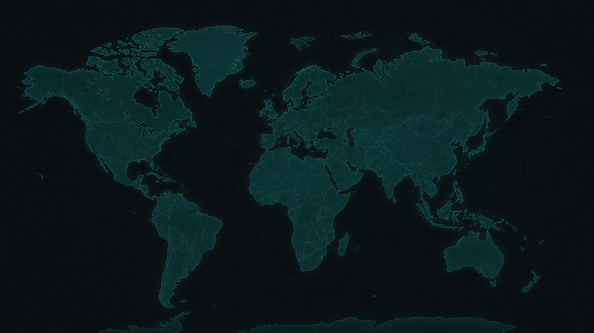

시설 지하화
처리시설을 지하에 배치해 지상 공간의 활용도를 높입니다.
GLOBAL ENVIRONMENT ARCHIVE
국내외 18개 소각시설의 위치를 확인하고, 공간·주민 참여·에너지 활용 방식의 차이를 지도 위에서 살펴보세요.
자세히 보기
국내외 소각시설을 공간과 도시의 재구성, 주민 참여와 투명한 운영, 에너지 회수와 자원순환으로 나누어 살펴봅니다. 하나의 시설이 여러 특징을 가질 수 있지만 가장 핵심적인 기준으로 분류했습니다.
SPACE & URBAN INTEGRATION
시설을 지하화하거나 공원과 문화공간을 결합해 소각시설을 도시 경관과 시민의 일상 안에 통합한 7개의 사례를 살펴봅니다.
처리시설을 지하에 배치해 지상 공간의 활용도를 높입니다.
시설 상부를 공원과 녹지로 시민에게 돌려줍니다.
산업시설의 외관과 기능을 도시의 상징으로 전환합니다.
전망대와 체육·문화시설을 지역 주민과 공유합니다.
주변 건축과 자연환경을 고려해 시설의 경계를 완화합니다.
PARTICIPATION & TRANSPARENCY
입지 결정부터 반입 검사와 배출 감시까지 주민이 운영 과정에 참여하고 정보를 확인하는 6개의 사례를 살펴봅니다.
시설 계획과 입지 논의에 주민의 의견을 반영합니다.
주민이 반입과 운영 과정을 직접 확인하고 감시합니다.
배출과 가동 정보를 공개해 운영의 투명성을 높입니다.
지원과 관리 원칙을 협약으로 정하고 지속적으로 이행합니다.
시설 수익과 기금을 주민 복지와 지역 사업에 활용합니다.
ENERGY & CIRCULARITY
소각 과정에서 발생한 열과 잔여 자원을 전기, 난방, 산업용 증기와 금속 회수로 연결한 5개의 사례를 살펴봅니다.
소각열을 회수해 주거지역의 난방과 온수에 공급합니다.
회수한 증기를 인근 산업체의 생산 에너지로 활용합니다.
고온 연소에서 발생한 열로 전기를 생산하고 공급합니다.
소각재에 남은 금속을 선별해 다시 자원으로 회수합니다.
처리시설과 재활용센터를 연결해 순환 과정을 교육합니다.
GLOBAL & DOMESTIC CASE ARCHIVE
공간 변화, 주민 참여, 에너지 활용이라는 세 가지 관점으로 국내외 18개 사례를 비교합니다. 사례를 누르면 상세 페이지로 이동합니다.
WHAT E.FACT LEARNS
시설 한 곳의 외관뿐 아니라 특정 지역에 집중된 전체 소각량과 누적 영향을 함께 봅니다.
편의시설 제공을 넘어 주민이 계획, 운영, 감시에 참여할 실질적인 권한이 필요합니다.
이미지 개선보다 배출, 반입, 가동, 사후관리 정보를 지속해서 공개하고 검증해야 합니다.